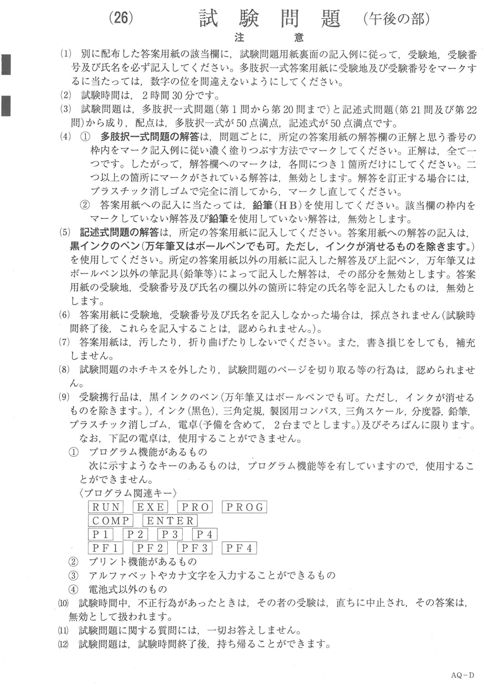
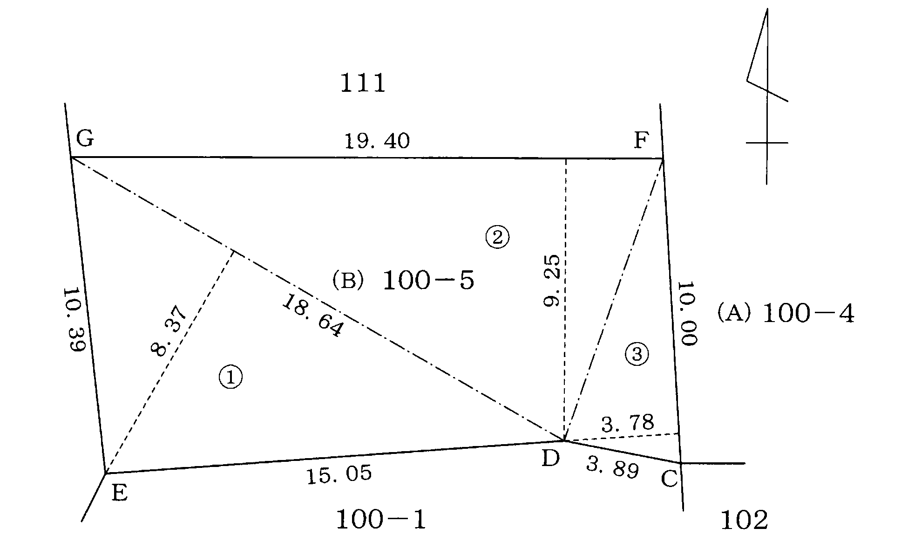
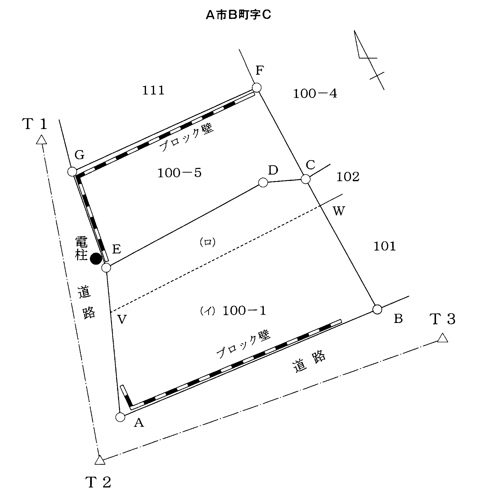
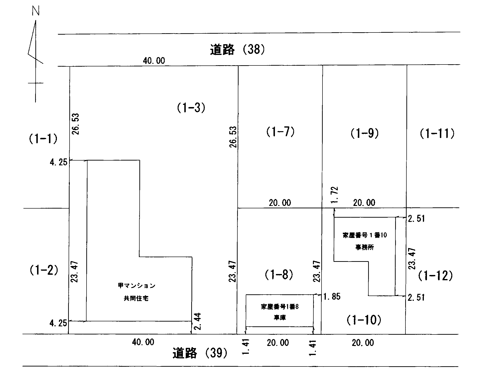
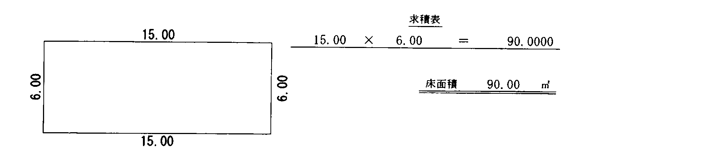
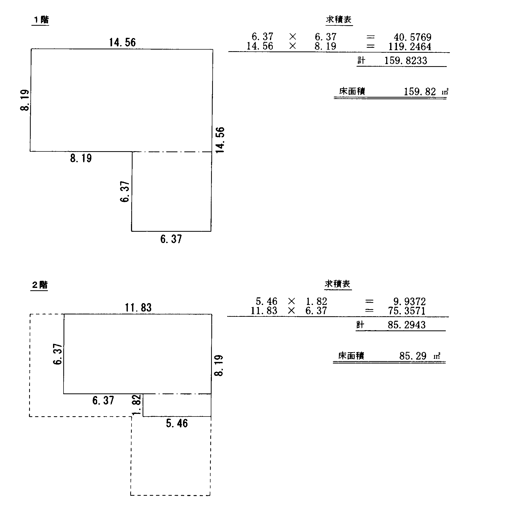
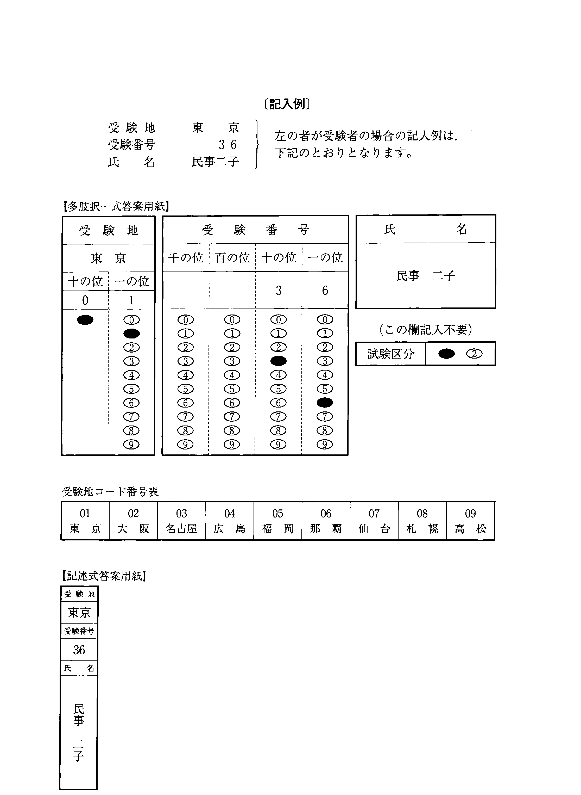

注意（問題冊子の表紙）

多肢択一式（第1問〜第20問）
第1問
成年後見，保佐又は補助に関する次のアからオまでの記述のうち，正しいものの組合せは，後記1から5までのうち，どれか。
- ア成年被後見人は，意思能力のある状態で日常生活に関する法律行為をした場合であっても，その法律行為を取り消すことができる。
- イ本人以外の者の請求により後見開始，保佐開始又は補助開始の審判をする場合には，いずれの場合も本人の同意がなければならない。
- ウ被保佐人が行為能力者であることを信じさせるため詐術を用いたときは，その行為を取り消すことができない。
- エ成年被後見人が事理を弁識する能力を欠く常況にないこととなった場合には，後見開始の審判は直ちに失効し，成年被後見人は行為能力を回復する。
- オ成年後見人は財産に関する法律行為一般について代理権を有し，保佐人及び補助人は家庭裁判所の審判により付与された特定の法律行為について代理権を有する。
1 アウ2 アエ3 イエ4 イオ5 ウオ
第2問
物権的請求権に関する次のアからオまでの記述のうち，判例の趣旨に照らし誤っているものの組合せは，後記1から5までのうち，どれか。
- ア所有権に基づく物権的請求権は，10年の消滅時効により消滅する。
- イ所有者は，その所有権の取得について対抗要件を備えていなくても，その所有物を不法に占有する者に対して，所有権に基づく返還請求権を行使することができる。
- ウ所有権に基づく妨害排除請求権を行使するには，妨害状態が発生したことについて相手方に故意又は過失がなければならない。
- エ占有者が所有者に対して提起した占有の訴えに対して，所有者は，その所有権に基づく反訴を提起することができる。
- オ所有者は，その所有物について権原を有しない者から賃借して占有する者だけでなく，当該所有物を賃貸した者に対しても，所有権に基づく返還請求権を行使することができる。
1 アイ2 アウ3 イエ4 ウオ5 エオ
第3問
Aには，その親族として，妻B，子C，父D，祖母F（既に死亡している母Eの母）及び孫G（Cの子）がいる場合において，Aについて相続が開始したときのAの相続人の範囲に関する次の1から5までの記述のうち，正しいものは，どれか。
- 1AとCとが死亡し，その死亡の先後が明らかでない場合には，Dは，Aの相続人となる。
- 2Cは，Aの死亡前に，故意にBを殺害しようとしたが未遂に終わった場合には，これにより刑に処せられたときであっても，Aの相続人となる。
- 3Aの死亡前にC及びGが既に死亡していた場合には，Fは，Eに代わってAの相続人となる。
- 4Cが相続の放棄をした場合には，Gは，Cを代襲してAの相続人となる。
- 5Aの死亡前にAとBとが離婚し，BがCの親権者と定められていた場合であっても，Cは，Aの相続人となる。
第4問
次の文章中の（ ア ）から（ オ ）までの空欄に後記〔語句群〕の中から適切な語句を選んで入れると，表題部所有者に関する文章となる。（ ア ）から（ オ ）までの空欄に入れるべき語句の組合せとして適切なものは，後記1から5までのうち，どれか。
「不動産の表示に関する登記は，昭和35年の不動産登記法の改正により創設された制度である。この改正前は，不動産の物理的状況を把握するための公簿として（ ア ）の制度が存在し，現在の登記記録における表題部に記録される登記事項は，この公簿の記載に依存していたといえる。昭和25年に，地租及び家屋税が廃止され，土地及び建物に対する税金については，固定資産税として（ イ ）が徴収することとされた後，昭和35年に，現在の登記記録における表題部に当たる（ ア ）の制度と権利部に当たる（ ウ ）の制度が統合・一元化されることとなった。
この歴史的経緯により，表題部に記録される表題部所有者については，土地の地目，地積や建物の種類，構造，床面積等と同様に，不動産を特定するための機能や，所有権の登記がない土地及び建物について，表題部の登記事項に変更や更正があった際にする変更の登記や更正の登記の（ エ ）を特定する機能を有しているとされ，また，（ オ ）の登記を申請する際の（ エ ）を特定する機能も有しているとされる。」
〔語句群〕
| A 登記簿 | B 不動産登記 | C 土地台帳・家屋台帳 |
| D 市町村 | E 国 | F 都道府県 |
| G 用益物権の設定 | H 所有権の保存 | I 所有権の移転 |
| J 申請適格者 | K 申請代理人 | L 納税義務者 |
| （ア） | （イ） | （ウ） | （エ） | （オ） |
|---|
| 1 | B | F | C | K | I |
|---|
| 2 | B | E | A | J | H |
|---|
| 3 | C | E | B | K | H |
|---|
| 4 | C | D | B | J | H |
|---|
| 5 | C | D | A | L | G |
|---|
第5問
地図に関する次のアからオまでの記述のうち，誤っているものの組合せは，後記1から5までのうち，どれか。
- ア地図は，一筆又は二筆以上の土地ごとに作成し，各土地の区画を明確にし，地番を表示するものである。
- イ地図訂正の申出をする場合において，その土地の登記記録の地積に錯誤があるときは，当該申出は，地積に関する更正の登記の申請と併せてしなければならない。
- ウ主に田，畑が占める地域及びその周辺の地域の地図は，2,500分の1の縮尺で作成しなければならない。
- エ地図には，基本三角点等の位置が記録される。
- オ地図の閲覧を請求することができるのは，請求する土地の所有者や当該土地の抵当権者及び隣接土地所有者等の利害関係を有する者に限られる。
1 アイ2 アエ3 イウ4 ウオ5 エオ
第6問
次のような登記事項の記録（抜粋）がある甲土地及び乙土地に関する次のアからオまでの記述のうち，正しいものの組合せは，後記1から5までのうち，どれか。
なお，甲土地及び乙土地は，その地番区域及び所有権の登記名義人が同一であり，また，いずれも乙区に記録されている事項はないものとする。
（甲土地）
| ①地番 | ②地目 | ③地積 ㎡ | 原因及びその日付〔登記の日付〕 |
|---|
| 157番 | 山林 | 2851 | |
| 157番1 | | 1025 | ①③157番1ないし157番7に分筆
〔平成18年3月15日〕 |
| | 993 | ③錯誤〔平成21年6月3日〕 |
| | 591 | ③157番1，157番16に分筆
〔平成24年11月9日〕 |
| 宅地 | 591.61 | ②③平成26年8月8日地目変更
〔平成26年8月19日〕 |
（乙土地）
| ①地番 | ②地目 | ③地積 ㎡ | 原因及びその日付〔登記の日付〕 |
|---|
| 157番6 | 山林 | 310 | 157番から分筆〔平成18年3月15日〕 |
| | 428 | ③157番7を合筆〔平成26年8月19日〕 |
- ア甲土地について錯誤による地積の更正の登記が平成21年6月3日にされたことによっても，平成18年3月15日にされた分筆の登記において登記所に備え付けられた地積測量図は閉鎖されない。
- イ甲土地について分筆の登記が平成24年11月9日にされたことにより，平成21年6月3日にされた錯誤による地積の更正の登記において登記所に備え付けられた地積測量図は閉鎖される。
- ウ乙土地について合筆の登記が平成26年8月19日にされたことにより，平成18年3月15日にされた分筆の登記において登記所に備え付けられた地積測量図は閉鎖される。
- エ甲土地及び乙土地が相互に接続している場合であっても，甲土地を乙土地に合筆する合筆の登記を申請することはできない。
- オ甲土地について地目の変更の登記が平成26年8月19日にされた際に，甲土地の所有権の登記名義人に対し，当該地目の変更の登記に係る登記識別情報が通知されている。
1 アウ2 アエ3 イウ4 イオ5 エオ
第7問
表示に関する登記の申請義務に関する次のアからオまでの記述のうち，正しいものの組合せは，後記1から5までのうち，どれか。
- ア表題登記のある建物について，当該建物を共用部分とする旨の規約を設定した場合には，当該建物の表題部所有者は，当該規約を設定した日から1か月以内に，共用部分である旨の登記を申請しなければならない。
- イAが所有権の登記名義人である土地上にBが所有権の登記名義人である建物が所在している場合において，当該建物が取り壊されて滅失したときは，Aは，その滅失の日から1か月以内に，当該建物の滅失の登記を申請しなければならない。
- ウ表題登記がない土地の所有者であるAが，当該土地の表題登記を申請することなくBとの間で売買契約を締結し，Bが当該土地の所有権を取得した場合には，Bは，その所有権の取得の日から1か月以内に，当該土地の表題登記を申請しなければならない。
- エAが表題部所有者である土地について，Aの登記記録上の住所について変更があった場合には，Aは，その変更があった日から1か月以内に，表題部所有者の住所の変更の登記を申請しなければならない。
- オ地目が雑種地として登記されているA所有の土地をBが賃借して駐車場として利用している場合において，Bが当該土地上に建物を建築して宅地として利用を始めた後に当該土地の所有権を取得したときは，Bは，自己に係る所有権の登記があった日から1か月以内に，当該土地の地目の変更の登記を申請しなければならない。
1 アイ2 アオ3 イエ4 ウエ5 ウオ
第8問
表示に関する登記の申請における添付情報に関する次のアからオまでの記述のうち，誤っているものの組合せは，後記1から5までのうち，どれか。
- ア法人Aが表題部所有者である土地につき地目の変更の登記を申請する場合において，当該申請を受ける登記所が，法人Aの代表者の氏名及び住所を含む法人Aの登記を受けた登記所と同一である登記所に準ずるものとして法務大臣が指定した登記所であるときは，法人Aの代表者の資格を証する情報を提供することを要しない。※
- イAが所有権の登記名義人である土地につき合筆の登記を当該登記の申請代理人である土地家屋調査士Bによって申請する場合において，Aの本人確認情報と併せて，土地家屋調査士Bが所属する土地家屋調査士会が発行した職印に関する証明書を提供するときは，Aの印鑑に関する証明書を提供することを要しない。
- ウAが所有権の登記名義人である土地につき合筆の登記を当該登記の申請代理人である土地家屋調査士Bによって申請する場合において，Aが署名して公証人の認証を受けた委任状を提供するときは，当該委任状につきAの印鑑に関する証明書を提供することを要しない。
- エ土地の表題部所有者であるAについて相続が開始し，Aの相続人がBのみである場合において，Bが当該土地について表示に関する登記を申請するときは，Aについて相続があったことを証する市町村長，登記官その他の公務員が職務上作成した情報を提供することを要しない。
- オ土地の所有者であるAが当該土地の表題登記を申請する場合において，Aに係る住民基本台帳法に規定する住民票コードを提供するときは，Aの住所を証する情報を提供することを要しない。
1 アイ2 アウ3 イエ4 ウオ5 エオ
※ ア 平成27年11月2日施行の不動産登記令改正により，法人が申請人となる場合は会社法人等番号を提供すれば代表者の資格を証する情報の提供を要しないこととなった（令7条1項1号イ）。本肢が述べる指定登記所の扱いは規則36条1項として残っている。
第9問
地積の更正の登記に関する次のアからオまでの記述のうち，正しいものの組合せは，後記1から5までのうち，どれか。
- ア土地の表題部所有者又は所有権の登記名義人は，地積について錯誤があったことが判明した日から1か月以内に，地積の更正の登記を申請しなければならない。
- イ一筆の土地の一部を時効取得した者は，当該土地の所有権の登記名義人に代位して分筆の登記を申請する場合に，当該土地について，分筆前の地積と分筆後の地積との差が分筆前の地積を基準にして不動産登記規則に定められている地積測定における誤差の限度を超えるときであっても，当該土地について地積の更正の登記を代位によって申請することはできない。
- ウ土地の地積が減少することとなる地積の更正の登記を申請する場合には，当該土地に抵当権の設定の登記がされていても，その抵当権の登記名義人が承諾したことを証する情報を提供することを要しない。
- エ土地の表題部所有者又は所有権の登記名義人のほか，当該土地の抵当権の登記名義人も，当該土地について地積の更正の登記を申請することができる。
- オA及びBが所有権の登記名義人である土地について，Aが単独で地積の更正の登記を申請する場合であっても，Bが承諾したことを証する情報を提供することを要しない。
1 アエ2 アオ3 イウ4 イエ5 ウオ
第10問
分筆の登記に関する次のアからオまでの記述のうち，正しいものの組合せは，後記1から5までのうち，どれか。
- ア抵当権の設定の登記がされている甲土地から乙土地を分筆する分筆の登記を申請する場合において，その抵当権の登記名義人が当該抵当権を分筆後の甲土地について消滅させることを承諾したことを証する情報を提供したときは，分筆後の甲土地の登記記録には当該抵当権が消滅した旨が記録され，乙土地の登記記録には当該抵当権の設定の登記が転写される。
- イ地目が宅地として登記されている土地について，その一部を区画して新たに建物を建築した場合には，その区画した部分につき分筆の登記を申請しなければならない。
- ウA，B及びCが表題部所有者である土地について，A，B及びCとDとの間で売買契約が締結され，Dが当該土地の所有権を取得した場合には，Dは，A，B及びCの承諾があったことを証する情報を提供しても，当該土地について分筆の登記の申請をすることはできない。
- エA及びBが所有権の登記名義人である土地につき共有物分割を命ずる判決が確定した場合において，Bが当該判決に基づく分筆の登記の申請に協力しないときであっても，Aは，Bに代位して，共有物分割の判決内容に基づく分筆の登記を申請することはできない。
- オ甲土地の地上権者であるAが甲土地の一部に係る地上権をBに対して譲渡した場合には，甲土地の所有権の登記名義人であるCは，その譲渡部分に係る甲土地についての分筆の登記を申請しなければならない。
1 アウ2 アエ3 イウ4 イオ5 エオ
第11問
建物の表題部の変更の登記に関する次のアからオまでの記述のうち，正しいものの組合せは，後記1から5までのうち，どれか。
- ア建物がえい行移転したことにより所在が変更した場合において，当該建物の表題部の変更の登記を申請するときは，その申請情報の内容である登記原因及びその日付について，「年月日所在地番変更」と記録しなければならない。
- イ増築が数次にされている建物について，いずれの増築がされたときも建物の表題部の変更の登記がされていない場合において，床面積の変更の登記を申請するときは，その申請情報の内容である登記原因の日付について，最終の増築の日を記録すれば足りる。
- ウ甲市乙町1番から4番までに所在する各土地上に一棟の平家建の建物を新築し，当該建物の床面積が同1番の土地上に100㎡，同2番の土地上に200㎡，同3番の土地上に120㎡，同4番の土地上に150㎡である場合において，当該建物の表題登記を申請するときは，その申請情報の内容である所在について，「甲市乙町2番地，4番地，3番地，1番地」と記録しなければならない。
- エ甲附属建物がある建物について，甲附属建物を取り壊して乙附属建物を新築した場合に，乙附属建物について甲附属建物と同じ符号を付すことはできない。
- オAが所有権の登記名義人である甲土地をBが賃借し，甲土地上にBが所有権の登記名義人である乙建物がある場合において，甲土地について分筆の登記がされたことにより乙建物の所在地番が変更したときは，Bは，乙建物の所在の変更の登記の申請をすることを要しない。
1 アイ2 アウ3 イエ4 ウオ5 エオ
第12問
建物の登記の申請情報に関する次のアからオまでの記述のうち，正しいものの組合せは，後記1から5までのうち，どれか。
- ア一棟の建物に属する区分建物の全部について表題登記の申請をする場合には，各別の申請情報によることはできない。
- イ同一の登記所に対して同時に二以上の申請をする場合において，各申請に共通する添付情報を一の申請の申請情報と併せて提供するときは，当該添付情報を当該一の申請の申請情報と併せて提供した旨を他の申請の申請情報の内容としなければならない。
- ウ甲建物の附属建物として登記されている区分建物を分割して，これを乙建物の附属建物に合併しようとする場合において，乙建物の当該附属建物が甲建物の附属建物と接続する区分建物であるときは，建物の分割の登記及び建物の合併の登記を一の申請情報によって申請することはできない。
- エ敷地権付き区分建物の表題登記の申請をする場合において，その敷地権の目的である土地が当該区分建物の所在地を管轄する登記所以外の登記所の管轄区域内にあるときは，当該土地の不動産番号と併せて当該土地を管轄する登記所の表示を申請情報の内容とすれば，当該土地の不動産所在事項，地目及び地積を申請情報の内容とすることを要しない。
- オ区分建物でない建物について区分の登記を申請する場合において，一棟の建物の名称を申請情報の内容とするときは，当該一棟の建物の構造及び床面積を申請情報の内容とすることを要しない。
1 アイ2 アオ3 イエ4 ウエ5 ウオ
第13問
建物図面又は各階平面図に関する次のアからオまでの記述のうち，誤っているものの組合せは，後記1から5までのうち，どれか。
- ア建物の分割の登記を申請する場合において提供する建物図面及び各階平面図には，分割後の各建物を表示し，これに符号を付さなければならない。
- イ区分建物の表題登記を申請する場合には，当該区分建物が属する一棟の建物の各階平面図を提供することを要しない。
- ウ同一の登記所の管轄区域内にある2個の建物について建物図面の訂正の申出をする場合には，一の申出情報によって申出をすることができる。
- エ建物の種類の変更の登記を申請する場合において，登記所に当該建物の建物図面及び各階平面図が備え付けられていないときは，申請情報を併せて当該建物の建物図面及び各階平面図を提供しなければならない。
- オ建物図面に記録された建物の位置に誤りがある場合において，当該建物の所有権の登記名義人が二人以上あるときは，そのうちの一人から建物図面の訂正の申出をすることができる。
1 アエ2 アオ3 イウ4 イオ5 ウエ
第14問
附属建物に関する次のアからオまでの記述のうち，誤っているものは，幾つあるか。
- ア附属建物の新築による建物の表題部の変更の登記を申請する場合には，添付情報として，表題部所有者又は所有権の登記名義人の住所を証する市町村長，登記官その他の公務員が職務上作成した情報を提供しなければならない。
- イ附属建物がある建物の表題登記を申請する場合において，附属建物の新築の日が主である建物の新築の日と同一であるときは，附属建物の新築の日付を申請情報の内容とすることを要しない。
- ウ甲建物を乙建物の附属建物とする建物の合併の登記を申請する場合には，添付情報として，合併後の建物図面及び各階平面図を提供しなければならない。
- エ附属建物がある区分建物の表題登記を申請する場合において，附属建物が主である建物と同一の一棟の建物に属する区分建物であるときは，当該附属建物の所在地番並びに構造及び床面積を申請情報の内容とすることを要しない。
- オ甲建物の敷地に乙建物の敷地を合筆する合筆の登記がされた後，甲建物を乙建物の附属建物とする建物の合併の登記を申請する場合において，合筆による乙建物の所在の変更の登記を申請するときは，当該合併の登記と当該所在の変更の登記を一の申請情報によって申請することはできない。
1 1個2 2個3 3個4 4個5 5個
第15問
建物の床面積の定め方に関する次のアからオまでの記述のうち，誤っているものの組合せは，後記1から5までのうち，どれか。
- ア区分建物でない木造の建物の床面積は，壁の厚さ又は形状にかかわらず，柱の中心線で囲まれた部分の水平投影面積により定める。
- イ区分建物が属する一棟の建物の床面積は，各階ごとに壁その他の区画の内側線で囲まれた部分の水平投影面積により定める。
- ウ区分建物において，エレベーター室，エレベーター巻上げ機械室及び階段室で構成される天井の高さが1.8メートルの塔屋は，一棟の建物の床面積に算入する。
- エ観覧席の部分には固定式の屋根の設備を有し，競技場の部分には開閉式の屋根の設備を有するスポーツ施設は，観覧席部分の面積のほか，競技場部分の面積も，床面積に算入する。
- オ周壁のないベランダは，区分建物であっても区分建物でない建物であっても，いずれも床面積に算入しない。
1 アエ2 アオ3 イウ4 イオ5 ウエ
第16問
区分建物に関する次のアからオまでの記述のうち，正しいものは，幾つあるか。
- ア区分建物が新築された後，当該区分建物の所有者がその敷地について登記された所有権を取得して，その取得の登記がされた場合において，当該所有権を敷地権とする区分建物の表題登記を申請するときは，敷地権の表示の登記原因の日付として，当該所有権の取得の登記の日を申請情報の内容とする。
- イ附属建物のある敷地権付き区分建物の表題登記を申請する場合において，当該附属建物が同一の一棟の建物に属する区分建物であるときは，敷地権の表示として，主である建物に係る敷地権と附属建物に係る敷地権とを区別して，申請情報の内容としなければならない。
- ウ区分建物の種類について変更があった後に当該区分建物の所有権の登記名義人となった者は，その者に係る所有権の登記があった日から1か月以内に，当該区分建物の種類の変更の登記を申請しなければならない。
- エ区分建物の属する一棟の建物の規約敷地とされている土地を，他の区分建物の属する一棟の建物の規約敷地とすることはできない。
- オ敷地権付き区分建物のうち抵当証券が発行されていない抵当権の登記があるものについて，専有部分とその専有部分に係る敷地利用権とを分離して処分することができるものとなったことによる敷地権の変更の登記を申請する場合には，当該抵当権の登記名義人が当該変更の登記後の当該区分建物について当該抵当権を消滅させたことを承諾したことを証する情報を提供しても，当該抵当権が消滅した旨の登記はされない。
1 1個2 2個3 3個4 4個5 5個
第17問
合体後の建物についての建物の表題登記及び合体前の建物についての建物の表題部の登記の抹消（以下「合体による登記等」と総称する。）に関する次のアからオまでの記述のうち，正しいものの組合せは，後記1から5までのうち，どれか。
- ア賃借権の登記がある甲建物と所有権の登記のみがある乙建物について合体による登記等を申請する場合において，甲建物に設定された賃借権が合体後の建物に存続するときは，その旨を申請情報の内容としなければならない。
- イ所有権の登記がある建物と表題登記があるが所有権の登記がない建物について合体による登記等を申請する場合において，合体後の建物の価額が6,000万円であり，所有権の登記がない建物の所有者が合体後の建物について有することとなる持分の割合を10分の3としたときは，登録免許税額は9万円である。
- ウ合体前の各建物の所有者が異なっており，合体前の各建物の所有者が合体後の建物について有することとなる持分の割合を定めなければならない場合において，合体前の各建物の所有者全員が申請人となり，その印鑑に関する証明書の提供があるときは，その合体による登記等の申請情報をもって，当該持分の割合を証する情報を兼ねることができる。
- エ甲建物の附属建物と乙建物とが合体した場合には，甲建物の附属建物を分割する分割の登記及び合体による登記等を一の申請情報によって申請しなければならない。
- オ合体前の建物の所有権の登記名義人の住所に変更があった場合でも，変更があったことを証する情報を添付情報として提供すれば当該所有権の登記名義人の住所の変更の登記をすることなく，合体による登記等を申請することができる。
1 アイ2 アエ3 イウ4 ウオ5 エオ
第18問
登記事項の証明等に関する次のアからオまでの記述のうち，正しいものの組合せは，後記1から5までのうち，どれか。
- ア閉鎖された地図に準ずる図面については，請求人が利害関係を有する部分に限り，その写しの交付を請求することができる。
- イ一棟の建物に属する全ての区分建物である建物の登記記録に記録されている事項のうち現に効力を有するものを証明した書面の交付を請求することができる。
- ウ電磁的記録に記録されている地役権図面の内容を証明した書面の交付の請求は，電子情報処理組織を使用して請求情報を登記所に提供する方法によることができる。
- エ区分建物の表題登記が申請された場合に添付情報として提供された敷地権に関する規約を設定したことを証する情報を記載した書面については，請求人が利害関係を有する部分に限り，その写しの交付を請求することができる。
- オ登記記録に記録されている事項の概要を記載した書面の交付の請求は，請求に係る不動産の所在地を管轄する登記所以外の登記所の登記官に対してもすることができる。
1 アイ2 アエ3 イウ4 ウオ5 エオ
第19問
筆界特定に関する次のアからオまでの記述のうち，誤っているものの組合せは，後記1から5までのうち，どれか。
- ア筆界特定とは，一筆の土地及びこれに隣接する他の土地について，筆界の現地における位置を特定することをいい，その位置を特定することができないときは，その位置の範囲を特定することをいう。
- イ対象土地の筆界について，民事訴訟の手続により筆界の確定を求める訴えが提起された場合であっても，当該訴えに係る判決が確定する前であれば，当該筆界についてされた筆界特定の申請は却下されない。
- ウ甲土地の所有権の登記名義人の相続人は，相続により甲土地の所有権を取得したとしても，甲土地について相続を原因とする所有権の移転の登記がされなければ，甲土地を対象土地とする筆界特定の申請をすることができない。
- エ甲土地の一部の所有権を取得したAは，甲土地の所有権の登記名義人であるBに代位しなければ，甲土地を対象土地とする筆界特定の申請をすることができない。
- オ筆界特定の申請をした後，その手続中に申請人が死亡したときは，申請人の相続人が申請人の地位を承継したものとして，筆界特定の手続を進めることができる。
1 アイ2 アオ3 イウ4 ウエ5 エオ
第20問
土地家屋調査士又は土地家屋調査士法人の業務に関する次のアからオまでの記述のうち，正しいものは，幾つあるか。
- ア土地家屋調査士は，業務を廃止したときは，遅滞なく，日本土地家屋調査士会連合会に対し，直接，その旨を届けなければならない。
- イ民間紛争解決手続代理関係業務を行うことを目的とする土地家屋調査士法人が同業務を行う場合には，当該土地家屋調査士法人の社員のうち，土地家屋調査士法第3条第2項に規定する土地家屋調査士である社員のみが当該業務を執行する権利を有する。
- ウ土地家屋調査士は，正当な事由がある場合でなければ，業務上取り扱った事件について知ることのできた秘密を他に漏らしてはならない。
- エ土地家屋調査士法人の社員でない者が自己を社員であると誤認させる行為をしたときは，当該社員でない者は，その誤認に基づいて土地家屋調査士法人と取引をした者に対し，社員と同一の責任を負う。
- オ土地家屋調査士は，その所属する土地家屋調査士会及び日本土地家屋調査士会連合会が実施する研修を受け，その資質の向上を図るように努めなければならない。
（参考）
土地家屋調査士法
第3条 （略）
2 前項第七号及び第八号に規定する業務（以下「民間紛争解決手続代理関係業務」という。）は，次のいずれにも該当する調査士に限り，行うことができる。この場合において，同項第七号に規定する業務は，弁護士が同一の依頼者から受任している事件に限り，行うことができる。
一 民間紛争解決手続代理関係業務について法務省令で定める法人が実施する研修であつて法務大臣が指定するものの課程を修了した者であること。
二 前号に規定する者の申請に基づき法務大臣が民間紛争解決手続代理関係業務を行うのに必要な能力を有すると認定した者であること。
三 土地家屋調査士会（以下「調査士会」という。）の会員であること。
3～5 （略）
1 1個2 2個3 3個4 4個5 5個
第21問（土地）
第21問土地家屋調査士法務太郎は，A市B町字C 100番1の土地（以下「本件土地」という。本件土地の登記記録の甲区は，（別紙1）の【本件土地の登記記録の甲区】のとおり。）の所有権の登記名義人から，本件土地の登記に関する相談を受け，（別紙2）の【土地家屋調査士法務太郎の聴取記録の概要】のとおり，事情を聴取し，必要となる全ての表示に関する登記の申請手続についての代理並びに当該登記について必要な調査及び測量の依頼を受け，（別紙3）の【土地家屋調査士法務太郎の調査及び測量の結果の概要】のとおり，調査及び測量を行った。
以上に基づき，次の問1から問5までに答えなさい。
問1土地家屋調査士法務太郎の測量成果から観測点Pの座標値を求め，別紙第21問答案用紙の第1欄に記載しなさい。
問2土地家屋調査士法務太郎の測量成果からD，E，V及びWの各点の座標値を求め，別紙第21問答案用紙の第2欄に記載しなさい。
問3本件について申請すべき登記がされた場合に100番5の土地の登記記録の甲区及び乙区に記録される事項について，簡潔に，別紙第21問答案用紙の第3欄に記載しなさい。
問4別紙第21問答案用紙の第4欄の登記申請書の空欄を埋めて，本件について申請すべき登記の申請書を完成させなさい。ただし，申請は1件の申請で行い，地積は測量成果である座標値を用いて座標法により求積するものとする。
問5別紙第21問答案用紙の第5欄を用いて，問4の登記の申請書に添付する地積測量図を完成させなさい。
(注)1本問における行為は全て適法に行われており，法律上必要な書類は全て適法に作成されているものとする。
2登記の申請は，書面申請の方法によってするものとする。
3座標値は，計算結果の小数点以下第3位以下を四捨五入し，小数点以下第2位までとすること。
4地積測量図には，測量成果から求めた筆界点間の辺長について，計算結果の小数点以下第3位以下を四捨五入した上，小数点以下第2位までを記載すること。
5各筆界点の座標値，平面直角座標系の番号又は記号，地積及びその求積方法並びに測量年月日は，記載することを要しない。
6A市の基準点の各点は，地積測量図にその地点を明示して名称を付して記載することとし，座標値を記載することを要しない。
7解答に当たって関数の値が必要となる場合には，次の【三角関数真数表】の値を用いること。
8訂正，加入又は削除をしたときは，訂正は訂正すべき字句に線を引き，近接箇所に訂正後の字句を記載し，加入は加入する部分を明示して行い，削除は削除すべき字句に線を引いて，訂正，加入又は削除をしたことが明確に分かるように記載すること。
【三角関数真数表】
| 角度 | sin | cos | tan |
|---|
| 14°56′58″ | 0.25797 | 0.96615 | 0.26700 |
| 44° 9′ 8″ | 0.69657 | 0.71749 | 0.97084 |
| 45°36′12″ | 0.71451 | 0.69962 | 1.02129 |
| 72°22′37″ | 0.95307 | 0.30275 | 3.14800 |
| 75°15′50″ | 0.96711 | 0.25437 | 3.80201 |
| 89°45′19″ | 0.99999 | 0.00427 | 234.12435 |
| 116°43′41″ | 0.89315 | −0.44976 | −1.98586 |
| 123° 7′30″ | 0.83748 | −0.54647 | −1.53253 |
| 134°20′15″ | 0.71524 | −0.69888 | −1.02340 |
| 135°50′52″ | 0.69657 | −0.71749 | −0.97084 |
| 208°13′29″ | −0.47293 | −0.88110 | 0.53675 |
| 234° 9′10″ | −0.81058 | −0.58563 | 1.38413 |
| 270°14′41″ | −0.99999 | 0.00427 | −234.12435 |
| 340°52′49″ | −0.32754 | 0.94484 | −0.34667 |
（別紙1）
【本件土地の登記記録の甲区】
（別紙2）
【土地家屋調査士法務太郎の聴取記録の概要】
相談者である本件土地の所有権の登記名義人は，本件土地について，【土地家屋調査士法務太郎の調査及び測量の結果の概要】における調査素図のC，D，E，V，W及びCの各点を順次直線で結んだ範囲の土地である（ロ）の部分を，100番5の土地と併せて一筆の土地とすることを希望している。
（別紙3）
【土地家屋調査士法務太郎の調査及び測量の結果の概要】
1資料に関する調査の結果
(1)本件土地に関する登記記録等の調査結果
（表題部）
| 所 在 | A市B町字C |
|---|
| 地 番 | 100番1 |
|---|
| 地 目 | 雑種地 |
|---|
| 地 積 | 380 ㎡ |
|---|
（権利部）
| 甲 区 | （別紙1） 参照 |
|---|
| 乙 区 | 順位1番 地役権設定 平成20年10月10日受付第10000号 |
|---|
| 目 的 （省略） |
|---|
| 範 囲 （省略） |
|---|
| 要役地 A市B町字C 102番 |
|---|
(2)本件土地の隣接地に関する登記記録等の調査結果
（表題部）
| 所 在 | A市B町字C |
|---|
| 地 番 | 100番5 |
|---|
| 地 目 | 雑種地 |
|---|
| 地 積 | 186 ㎡ |
|---|
（権利部）
| 甲 区 | 所有権の登記名義人の氏名，住所及び持分は，本件土地に同じ。 |
|---|
| 乙 区 | （記録事項なし） |
|---|
(3)本件土地及び隣接地に係る図面等の調査結果
A市B町字C 100番4及び同番5の土地には地積測量図が備え付けられているが，筆界点間距離が公差の範囲内にあるかどうかは，測量を行うまで不明である。
本件土地には地役権図面が備え付けられており，その地役権の設定範囲は〔調査素図〕の（ロ）の部分と一致している。
【地積測量図の写し（抜粋）】

2本件土地の境界杭等の状況並びに立会い及び測量の結果
(1)A市道路管理課における道路境界の調査結果
本件土地及び100番5の土地の道路境界について調査を行った結果，現地にある杭が筆界点として確認された。
点Eについては，観測結果の数値を採用することとした。
(2)隣接地の所有者との筆界の調査結果
隣接地の所有者が既存の境界杭を確認したところ，問題は認められなかった。
点Dについては，観測結果の数値を採用することとした。
(3)現況の調査結果
平成26年8月3日現在，本件土地及び100番5の土地は，駐車場として利用されている。
本件土地の周辺地域は，村落地に該当する。
(4)測量の結果
アA市の基準点T1，T2及びT3の点検測量を行ったところ，公差の範囲内であったが，T1から筆界点の観測をすることができなかった。
そこで，観測点Pを設置し，T2及びT3を使用して観測を行ったところ，その結果により得られたデータ及び公差等は，次の(ア)から(オ)までのとおりである。
(ア)A市基準点成果表
| 点名 | X座標(m) | Y座標(m) |
|---|
| T1 | 256.25 | 178.56 |
| T2 | 220.89 | 168.32 |
| T3 | 220.72 | 208.12 |
(イ)測量によって得られた座標
| 点名 | X座標(m) | Y座標(m) |
|---|
| A | 223.42 | 172.02 |
| B | 223.22 | 199.64 |
| C | 239.65 | 198.66 |
(ウ)点Pの観測データ
| 器械点 | 後視点 | 測 点 | 観測角 | 距 離(m) |
|---|
| T3 | T2 | T2 | 0° 0′ 0″ | 略 |
| T3 | T2 | P | 45°36′12″ | 35.36 |
(エ)境界点の観測データ
| 器械点 | 後視点 | 測 点 | 観測角 | 距 離(m) |
|---|
| P | T3 | T3 | 0° 0′ 0″ | 35.36 |
| P | T3 | D | 340°52′49″ | 12.70 |
| P | T3 | E | 72°22′37″ | 7.70 |
(注)1観測角は，後視方向を0°として右回りの角度を示す。
2北は，X軸正方向に一致する。
3点Vは，点Aと点Eを結ぶ直線上の点であり，点Eから3.30 mの位置にある。
4点Wは，点Bと点Cを結ぶ直線上の点であり，点Cから3.22 mの位置にある。
(オ)本件土地の地積測定の公差
| 精度区分 | (㎡) |
|---|
| 甲2 | 1.83 |
| 乙1 | 5.39 |
| 乙2 | 10.89 |
(カ)点間距離3 m及び15 mの距離測定の公差
| 精度区分 | 点間距離3 m | 点間距離15 m |
|---|
| 甲2 | 5 cm | 7 cm |
| 乙1 | 27 cm | 35 cm |
| 乙2 | 52 cm | 67 cm |
イ測量及び調査の結果は，次の〔調査素図〕のとおりである。
〔調査素図〕

(注)1調査素図中，AからGまでの各点は筆界点の位置を示し，点V及び点Wを結ぶ点線は本件土地の分割線を示す。
2T1からT3までの各点は，A市基準点を示す。
3A，C，D及びWの各点にはコンクリート杭が埋設されており，B，E及びVの各点には金属標が設置されている。
第22問（建物）
第22問次の〔見取図〕のとおり，A市B町一丁目1番3の土地上には甲マンションが所在し，1番8の土地（以下「本件土地」という。）上には甲マンションに附属する共用部分である車庫（以下「本件建物」という。）が所在している。また，丙川建設株式会社は，A市B町一丁目1番10の土地及び家屋番号1番10の建物を所有している。
土地家屋調査士民事花子は，（別紙1）の【事実関係】のとおり，甲マンション管理組合の理事長である乙山一郎及び丙川建設株式会社の代表取締役である丙川太郎から，登記に関する相談を受けて事情を聴取し，必要となる全ての表示に関する登記の申請手続についての代理並びに当該登記について必要な調査及び測量の依頼を受け，（別紙2）の【平成26年7月18日にG地方法務局において調査した登記記録等の内容】のとおり，登記記録等を調査した上，必要となる登記を申請した。
以上に基づき，次の問1から問5までに答えなさい。
問1土地家屋調査士民事花子が平成26年7月22日に申請した登記の申請情報の内容のうち，登記の目的，登記原因及びその日付並びに添付情報について，別紙第22問答案用紙の第1欄の各欄に記載しなさい。
問2土地家屋調査士民事花子が平成26年7月24日に申請した登記の申請情報の内容のうち，登記の目的，登記原因及びその日付並びに添付情報について，別紙第22問答案用紙の第2欄の各欄に記載しなさい。
問3土地家屋調査士民事花子が平成26年8月22日に申請した登記の申請書を，別紙第22問答案用紙の第3欄の空欄を埋めて完成させなさい。ただし，申請は，1件の申請で行ったものとする。
問4土地家屋調査士民事花子は，（別紙1）の【事実関係】の8の面談の際，丙川太郎から，家屋番号1番10の建物を附属建物として登記するための要件について質問を受けたため，これについて説明した。この場合における土地家屋調査士民事花子の説明として適切な内容について，別紙第22問答案用紙第4欄に記載しなさい。
問5別紙第22問答案用紙の第5欄を用いて，土地家屋調査士民事花子が平成26年8月22日に申請した登記の申請書に添付する建物図面及び各階平面図を完成させなさい。
なお，各階平面図には，求積表の記載を要しない。
(注)1本問における行為は全て適法に行われており，法律上必要な書類は全て適法に作成されているものとする。
2登記の申請は，書面申請の方法によってするものとする。
3建物図面は500分の1の縮尺により，各階平面図は250分の1の縮尺により，それぞれ作成すること。
4訂正，加入又は削除をしたときは，訂正は訂正すべき字句に線を引き，近接箇所に訂正後の字句を記載し，加入は加入する部分を明示して行い，削除は削除すべき字句に線を引いて，訂正，加入又は削除をしたことが明確に分かるように記載すること。
〔見取図〕

(注)1距離の単位は，メートルである。
2（ ）内の数字は，土地の地番である。
3敷地と建物の距離は，土地の筆界線から建物の外壁までの距離である。
4土地の形状及び建物の形状は，全て直交している。
5北の方向は，道路に直角である。
（別紙1）
【事実関係】
1本件建物には規約共用部分である旨の登記がされており，甲マンションの区分所有者全員で本件建物を共有しているが，甲マンションの住民が高齢化してきており，自家用車を手放した者も多く，車庫の必要性が薄れてきたため，平成26年4月30日，甲マンション管理組合の理事会において，本件土地及び本件建物を売却して，その代金を甲マンションの修繕費用に充てるとする議題があがっていた。
2丙川建設株式会社は，道路工事を主に取り扱っている会社であり，作業道具を一時的に保管する倉庫を必要としていた。
3甲マンション管理組合の理事長である乙山一郎は，丙川建設株式会社の代表取締役である丙川太郎に対し，本件土地及び本件建物の売却について相談をしたところ，両者の希望が合致し，売買契約の締結について内諾を得た。
4甲マンション管理組合の総会が平成26年6月30日に開催され，本件土地及び本件建物の売却について，甲マンションの区分所有者の全員一致により承認され，必要となる規約の設定や廃止について決議された。その後，売却の際に必要となる書類の準備が完了した同年7月10日，本件土地及び本件建物についての売買契約が締結された。
5甲マンションの全区分所有者は，土地家屋調査士民事花子に対し，本件土地及び本件建物を丙川建設株式会社に売却するために必要となる全ての表示に関する登記の申請手続の代理並びに当該登記について必要な調査及び測量を依頼した。土地家屋調査士民事花子は，平成26年7月22日に本件土地を売却するために必要となる表示に関する登記を，同月24日に本件建物を売却するために必要となる表示に関する登記を，それぞれ申請した。
65の登記がいずれも完了した後，平成26年8月1日，売買代金の支払及び物件の引渡しがされ，その後，甲マンションの全区分所有者から丙川建設株式会社への所有権の移転の登記が申請され，同月8日に当該登記がされた。
7丙川建設株式会社は，平成26年8月2日，本件土地と1番10の土地との筆界上にあるブロック塀の撤去工事及び本件建物を倉庫とするための内装工事を開始し，同月10日に両工事が完了した。
8土地家屋調査士民事花子は，丙川建設株式会社の代表取締役である丙川太郎と面談し，本件土地及び1番10の土地について合筆の登記を申請することを希望しない旨を確認した。また，土地家屋調査士民事花子は，丙川太郎から，本件建物について，家屋番号1番10の建物と登記記録上一個の建物として管理したいとの相談を受け，必要となる全ての表示に関する登記の申請手続についての代理並びに当該登記について必要な調査及び測量の依頼を受
けた上，現地の状況から当該登記をすることが可能であることを調査により確認した後，平成26年8月22日，必要となる全ての登記を申請した。
（別紙2）
【平成26年7月18日にG地方法務局において調査した登記記録等の内容】
1甲マンションの敷地の登記記録の抜粋
（表題部）
| 所 在 | A市B町一丁目 |
|---|
| 地 番 | 1番3 |
|---|
| 地 目 | 宅地 |
|---|
| 地 積 | 2000.00 ㎡ |
|---|
（権利部）
| 甲区 | 3番 所有権敷地権 建物の表示 A市B町一丁目1番地3 |
|---|
| 一棟の建物の名称 甲マンション |
|---|
| 乙区 | （記録事項なし） |
|---|
（表題部）
| 所 在 | A市B町一丁目 |
|---|
| 地 番 | 1番8 |
|---|
| 地 目 | 宅地 |
|---|
| 地 積 | 469.40 ㎡ |
|---|
（権利部）
| 甲区 | 3番 所有権敷地権 建物の表示 A市B町一丁目1番地3 |
|---|
| 一棟の建物の名称 甲マンション |
|---|
| 乙区 | （記録事項なし） |
|---|
2本件建物の登記記録の抜粋
（表題部）
| 所 在 | A市B町一丁目1番地8 |
|---|
| 家屋番号 | 1番8 |
|---|
| 種 類 | 車庫 |
|---|
| 構 造 | 軽量鉄骨造合金メッキ鋼板ぶき平家建 |
|---|
| 床 面 積 | 90.00 ㎡ |
|---|
| 原因日付 | 昭和63年3月20日規約設定 |
|---|
| 一棟の建物の表示 A市B町一丁目1番地3 |
|---|
| 建物の名称 甲マンションの共用部分 |
|---|
（権利部）
3丙川建設株式会社が所有する土地の登記記録の抜粋
（表題部）
| 所 在 | A市B町一丁目 |
|---|
| 地 番 | 1番10 |
|---|
| 地 目 | 宅地 |
|---|
| 地 積 | 469.40 ㎡ |
|---|
（権利部）
| 甲区 | 1番 A市D町一丁目10番4号 丙川建設株式会社 |
|---|
| 乙区 | （記録事項なし） |
|---|
4丙川建設株式会社が所有する建物の登記記録の抜粋
（表題部）
| 所 在 | A市B町一丁目1番地10 |
|---|
| 家屋番号 | 1番10 |
|---|
| 種 類 | 事務所 |
|---|
| 構 造 | 鉄骨造陸屋根2階建 |
|---|
| 床 面 積 | 1階 159.82 ㎡ 2階 85.29 ㎡ |
|---|
（権利部）
| 甲区 | 1番 A市D町一丁目10番4号 丙川建設株式会社 |
|---|
| 乙区 | （記録事項なし） |
|---|
51番8の各階平面図の抜粋

61番10の各階平面図の抜粋

答案用紙の記入例

多肢択一式の正解
| 第1問 | 5 |
|---|
| 第2問 | 2 |
|---|
| 第3問 | 5 |
|---|
| 第4問 | 4 |
|---|
| 第5問 | 4 |
|---|
| 第6問 | 2 |
|---|
| 第7問 | 5 |
|---|
| 第8問 | 3 |
|---|
| 第9問 | 5 |
|---|
| 第10問 | 1 |
|---|
| 第11問 | 3 |
|---|
| 第12問 | 3 |
|---|
| 第13問 | 5 |
|---|
| 第14問 | 3 |
|---|
| 第15問 | 3 |
|---|
| 第16問 | 3 |
|---|
| 第17問 | 4 |
|---|
| 第18問 | 3 |
|---|
| 第19問 | 4 |
|---|
| 第20問 | 4 |
|---|
法改正の注
- 第8問ア 平成27年11月2日施行の不動産登記令改正により，法人が申請人となる場合は会社法人等番号を提供すれば代表者の資格を証する情報の提供を要しないこととなった（令7条1項1号イ）。本肢が述べる指定登記所の扱いは規則36条1項として残っている。
出典: 法務省 平成26年度土地家屋調査士試験 午後の部 問題（冊子）。冊子の体裁（ページ番号・冊子記号）は除き、読点などの表記は原文に合わせています。